BM tarafından belirlenen 17 hedef ile daha sürdürülebilir bir dünya için çalışıyoruz.
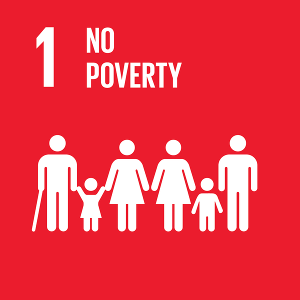
Dünyadaki yoksulluğu sona erdirerek eşit fırsatlar sağlamak.
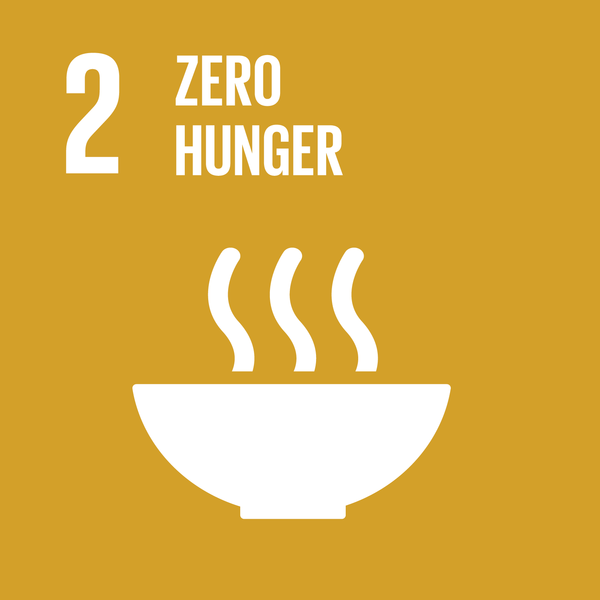
Sağlıklı ve sürdürülebilir gıda sistemleri ile açlığı sona erdirmek.
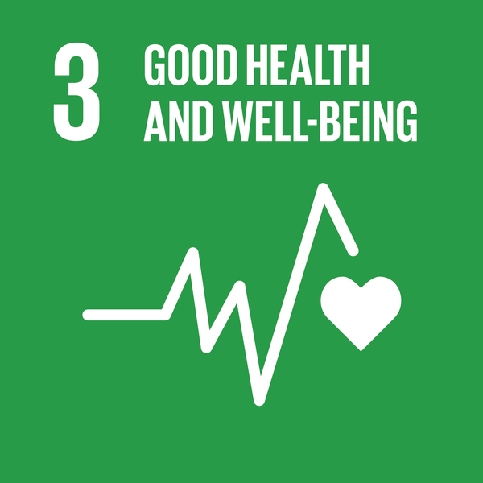
Herkes için sağlık hizmetlerine erişimi artırmak.
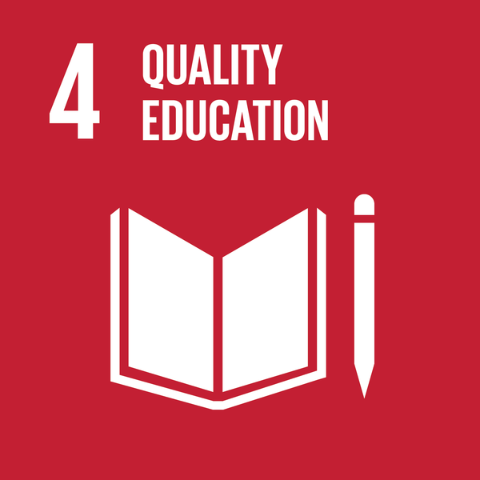
Herkese eşit, nitelikli ve kapsayıcı eğitim sağlamak.
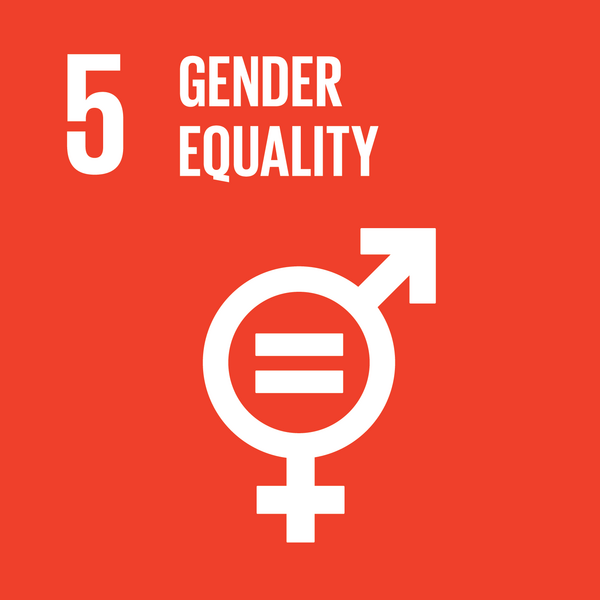
Kadınlar ve kız çocukları için eşit hakları güvence altına almak.
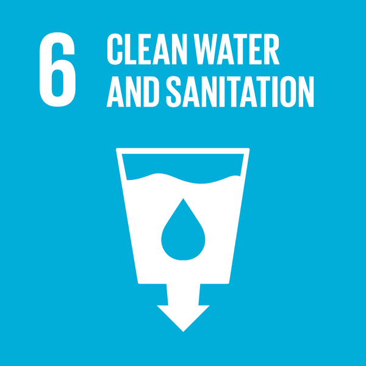
Herkes için temiz suya ve sağlıklı yaşam koşullarına erişimi sağlamak.
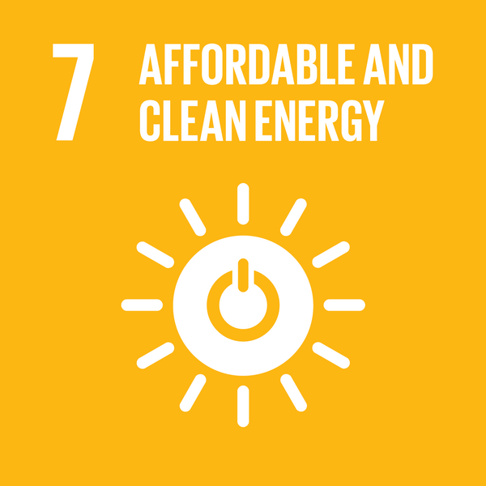
Herkes için güvenilir, sürdürülebilir ve modern enerjiye erişimi sağlamak.
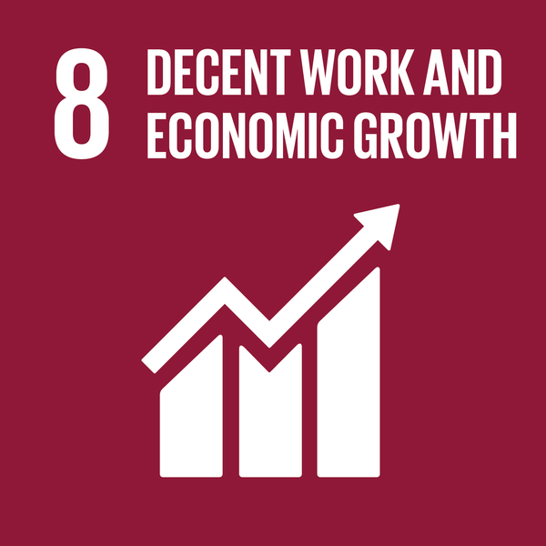
Sürdürülebilir ekonomik büyüme ve herkes için tam istihdam sağlamak.
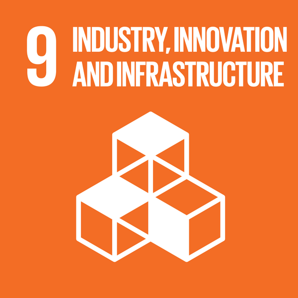
Sürdürülebilir sanayi, altyapı ve teknolojik yenilikleri teşvik etmek.
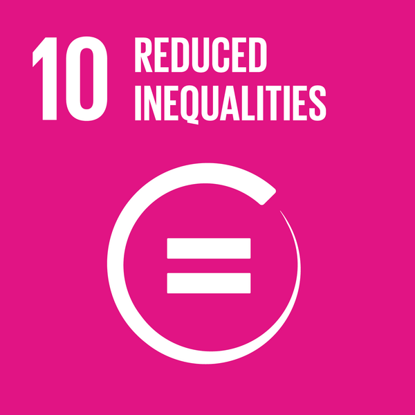
Ülkeler içindeki ve arasındaki eşitsizlikleri azaltmak.
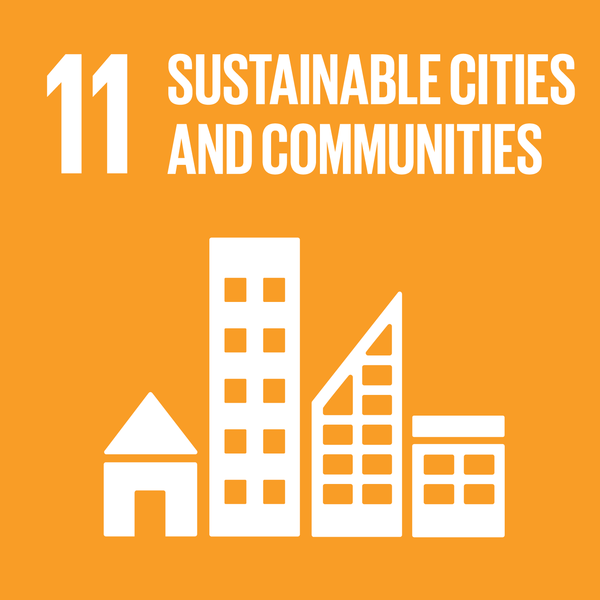
Şehirleri kapsayıcı, güvenli, dirençli ve sürdürülebilir hale getirmek.
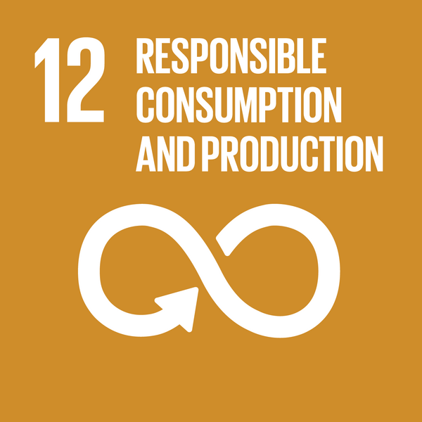
Sürdürülebilir üretim ve tüketim modellerini sağlamak.
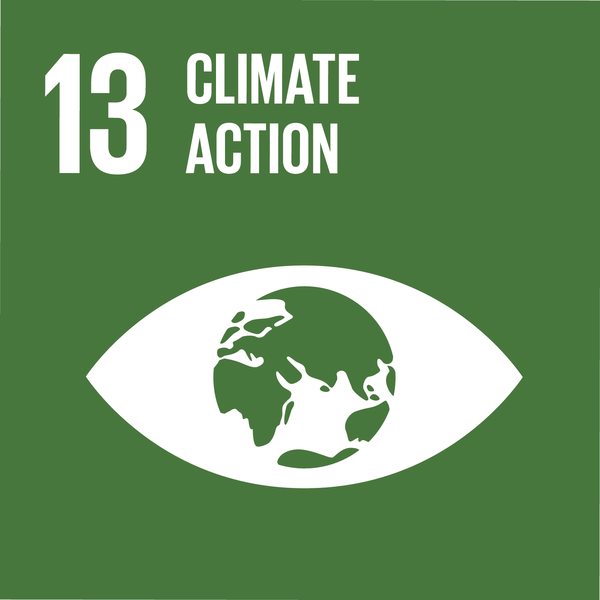
İklim değişikliği ve etkileriyle mücadele için acil önlemler almak.
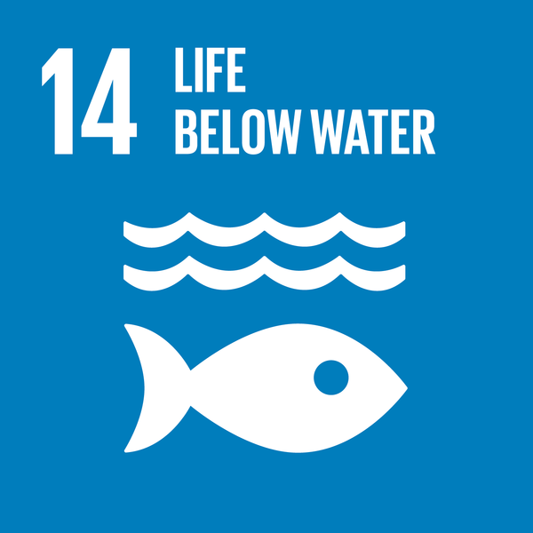
Okyanusları, denizleri ve deniz kaynaklarını korumak ve sürdürülebilir şekilde kullanmak.
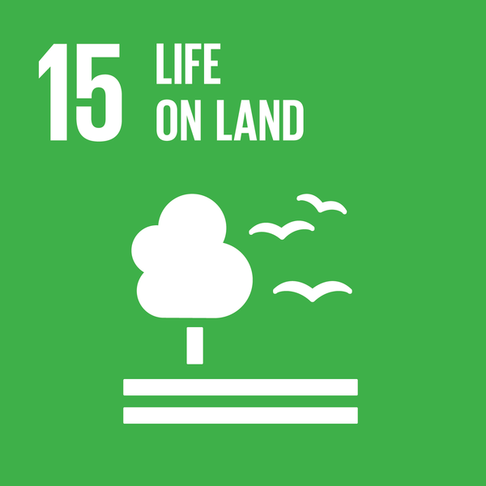
Ormanları korumak, çölleşmeyle mücadele etmek ve biyolojik çeşitliliği sağlamak.
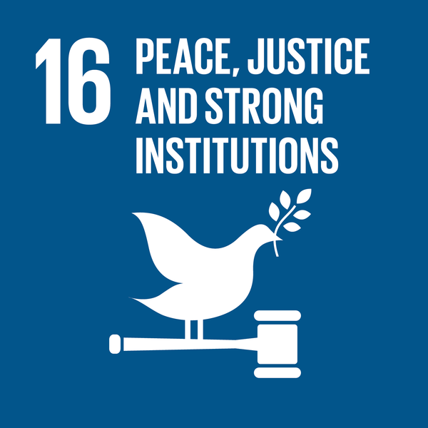
Sürdürülebilir kalkınma için barışçıl ve kapsayıcı toplumlar inşa etmek.
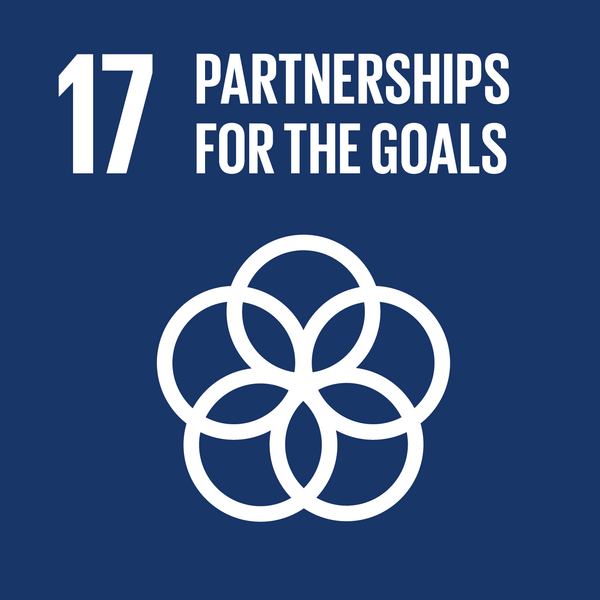
Sürdürülebilir kalkınmayı sağlamak için küresel iş birliklerini güçlendirmek.